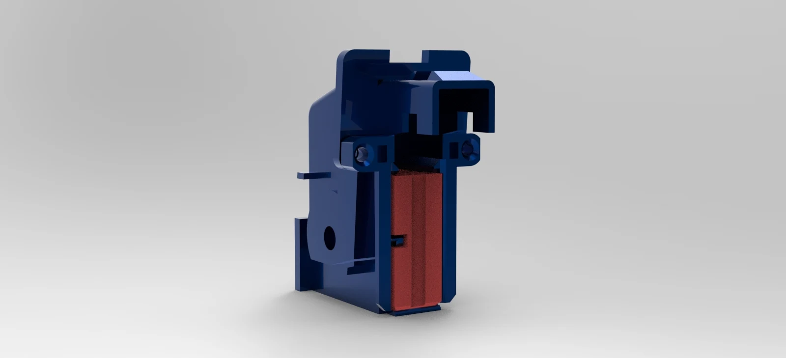
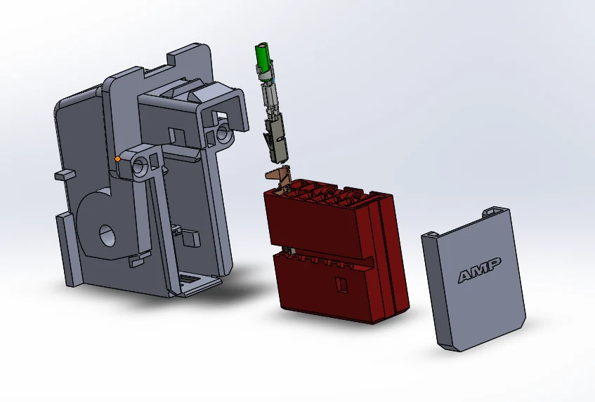
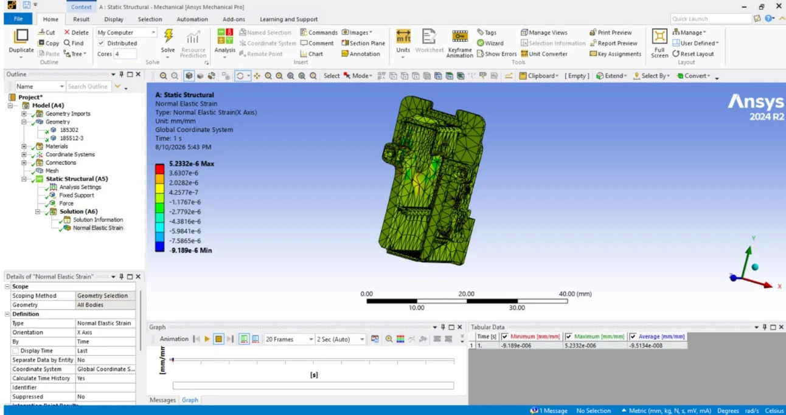
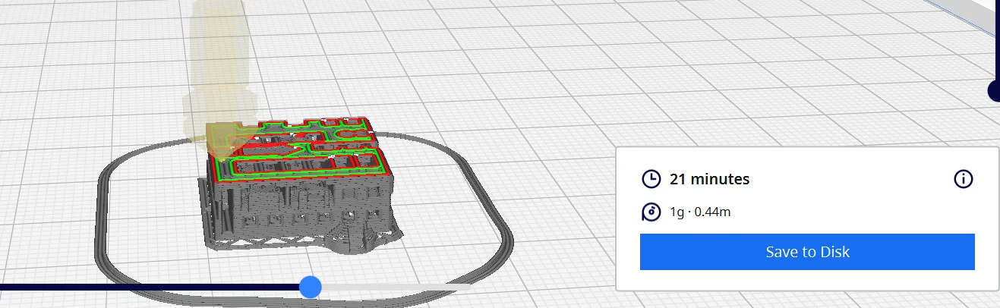

TE Connectivity · Product engineering internship
MQS Connector Locking Redesign
Industrial experience
Project overview
During my TE Connectivity internship, I worked on the external locking function of an automotive MQS connector.
The locking concept had to fit a limited space while accounting for insertion, retention, assembly and injection-molding constraints.

My contribution
What I did
I broke down the locking requirements and compared design concepts through functional analysis. I developed parametric CAD and assessed locking-beam deflection with mechanical calculations and ANSYS Mechanical FEA. I used Excel/VBA for engineering calculations and prepared a prototype validation test plan.
A closer look
Inside the work



Result
The outcome
Redesign concepts supported by mechanical calculations, ANSYS analysis and a prototype validation plan.
From functional requirements to CAD concepts, mechanical analysis and validation planning.
Methods & tools
- Parametric CAD
- ANSYS Mechanical
- Excel & VBA
- DFM